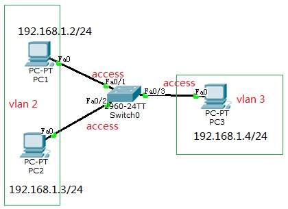

交换机的基本知识 本文主要介绍了交换机的基本知识，主要包括tag和untag报文的区别，交换机端口的三种模式Access、Trunk和Hybrid，以及链路聚合的概念。 另外，使用了思科的Cisco Packet Tracer模拟器和华为的eNSP模拟器进行了模拟实验，并作出了简要的实验步骤和实验现象的简要说明（具体的实验在后面的博客中，欢迎围观）。 写作过程中参照了以下两位网友的博客，在此特别感谢。 《access,trunk，hybrid端口分析》 小白成长纪录片 《用华为eNSP模拟器配置Hybrid、Trunk和Access三种链路类型端口》 陈林实验室 阅读全文 【点击查看】
实验一：通过Access划分vlan access端口只能属于一个vlan，通常用于连接终端设备。 配置图如下所示。  本次实验将交换机的fa0/1、fa0/2、fa0/3端口都设置为access模式，并将fa0/1和fa0/2配置为属于vlan2，fa0/3配置为属于vlan3，这样PC1就只能和PC2之间进行通信，不能和PC3进行通信。 阅读全文 【点击查看】